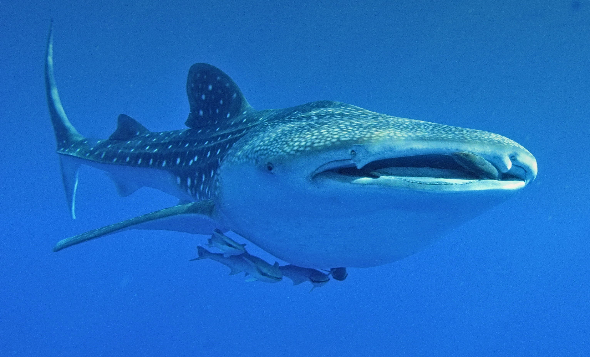

Meeresschildkröte
Die Meeresschildkröten (Cheloniidae) stellen im engeren Sinne eine Familie innerhalb der Schildkröten dar. Zusammen mit der Familie Dermochelyidae (deren einzige Art die Lederschildkröte ist) bilden sie die Überfamilie der Chelonioidea, die auf Deutsch oft als Meeresschildkröten im weiteren Sinne bezeichnet werden;[1] dies entspricht dann auch der intuitiven Interpretation als Gesamtheit der im Meer lebenden Schildkröten. Die Gruppe der Meeresschildkröten umfasst insgesamt sechs bzw. sieben Arten, die eine Reihe gemeinsamer Merkmale tragen. Ihre Extremitäten sind zu großen Paddeln umgestaltet, aus denen nur je eine bzw. zwei Krallen herausragen, und ihr Panzer ist deutlich abgeflacht und stromlinienförmig. Weil der Rückenpanzer auch bei älteren Schildkröten nicht vollständig verknöchert, ragen die Enden der Rippen frei hervor. Beim Bauchpanzer fallen auch einige Rückbildungen auf. Durch die Veränderung des Panzers haben die Meeresschildkröten außerdem die Fähigkeit verloren, ihren relativ großen Kopf bei Gefahr einzuziehen. Eine Anpassung an das Salzwasser stellen die Salzdrüsen dar, die beständig eine konzentrierte Salzlösung abgeben und so den Salzgehalt des Blutes regulieren, die Nieren allein sind dazu nicht fähig.

Walhai
Der Walhai (Rhincodon typus) ist der größte Hai und zugleich der größte Fisch der Gegenwart. Es handelt sich um die einzige Art der Gattung Rhincodon, die wiederum die einzige Gattung innerhalb der Familie Rhincodontidae ist. Der Walhai gehört der Ordnung der Ammenhaiartigen an. Die Tiere bewohnen die tropischen bis subtropischen Meere und kommen sowohl küstennah als auch küstenfern vor. Sie ernähren sich ähnlich wie Riesenhaie und Riesenmaulhaie von Plankton, nektischen Kleinstlebewesen und kleinen Fischen, die sie durch Ansaugen des Wassers filtrieren.
